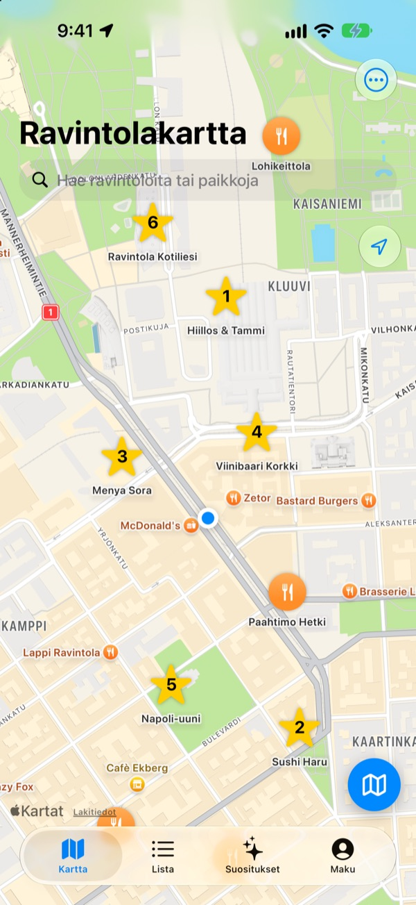
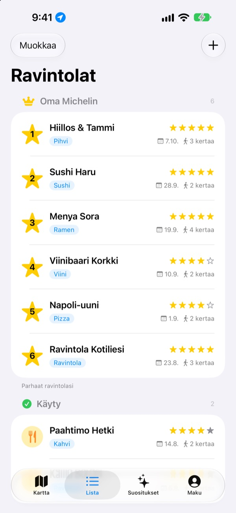
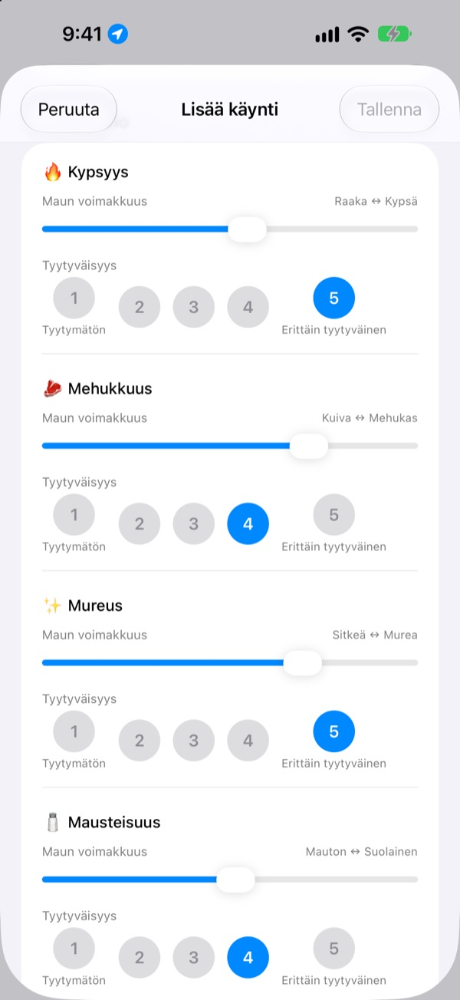
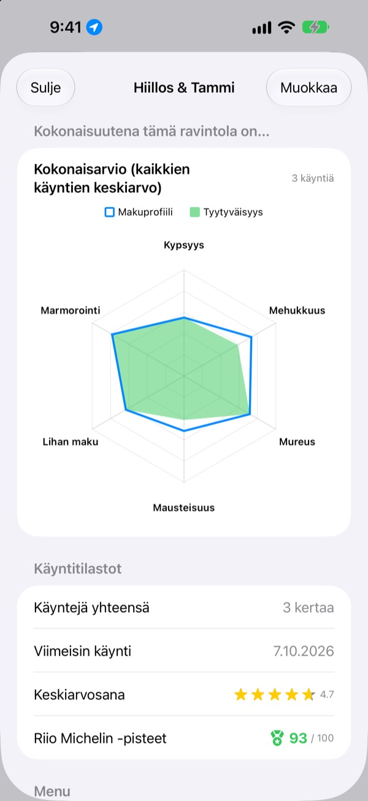

Hyvät ruokapaikat
eivät enää unohdu
Merkitse kartalle ravintolat, joissa olet käynyt ja jotka haluat kokeilla, ja kirjaa joka käynnillä, mitä tilasit, kuvat ja maku. Kun et tiedä, missä syödä, vastaus löytyy omista muistiinpanoistasi.
Kaikki toiminnot ovat ilmaisia. Ei rekisteröitymistä, tiedot pysyvät iPhonessasi.

Arvioi annos
Valitse ruokalaji ja säädä, kuinka voimakas kukin maku oli ja kuinka paljon pidit siitä. Samat kohdat ja sama laskutapa kuin käynnissä sovelluksessa.
Siellä oli hyvää, mutta mitä minä tilasinkaan?
Muistat, että ravintola oli mahtava, mutta nimi on hämärä, ja mitä tilasit tai oliko liemi liian suolaista, et muista ollenkaan. Joten haet taas ja luet tuntemattomien arvosteluja. Insaeng säilyttää kartalla sen, mitä itse maistoit, jotta seuraava valinta perustuu omaan kokemukseesi.
Käyty, Haluan käydä ja oma Michelin
Hae kartalta tai napauta lähellä olevaa paikkaa, niin se tallentuu heti. Pidä käydyt paikat erillään niistä, joita haluat kokeilla, ja järjestä kuusi suosikkiasi sijoille 1–6.
Kun joku kysyy hyvää paikkaa, näytä vain lista.

Kysymykset ruokalajin mukaan
Maun voimakkuuden, kuten tulisuuden tai suolan, säädät liukusäätimellä, ja sen, kuinka paljon pidit, arvioit erikseen asteikolla 1–5. Pihvissä arvioidaan kypsyys ja mehukkuus, sushissa riisi ja kala, ramenissa liemi ja nuudelit.
Jokainen käynti tallentaa myös annoksen, kuvat, tähdet ja muistiinpanot.

Minne kannattaa palata, näkyy numeroina
Käyntien karttuessa jokainen ravintola näyttää kokonaisarvion kaikkien käyntien keskiarvosta sekä Riio Michelin -pisteet sadasta, joissa yhdistyvät tähdet ja tyytyväisyys.
Kun lähdet tallennetusta ravintolasta, hetken päästä tulee muistutus kirjata käynti.

Aloita kolmella askeleella
- 1
Tallenna ravintola
Hae kartalta tai napauta lähellä olevaa paikkaa.
- 2
Kirjaa käynti
Annos, kuvat, tähdet ja maku. Makuarvio on vapaaehtoinen.
- 3
Valitse seuraava
Katso top 6 ja pisteet ja suunnista Apple Karttojen, Kakao Mapin tai Naver Mapin avulla.
Mitä arvioidaan ruokalajeittain
- 🍽️ Yleinen
- Tulisuus, Voimakkuus, Makeus, Suolaisuus, Rasvaisuus, Luontainen maku
- 🥩 Pihvi
- Kypsyys, Mehukkuus, Mureus, Mausteisuus, Lihan maku, Marmorointi
- 🍣 Sushi
- Shari (riisi), Neta (kala), Wasabi, Tasapaino, Muotoilu, Lämpötila
- 🍜 Ramen
- Liemi, Nuudelit, Chashu, Täytteet, Lämpötila, Tasapaino
- 🍕 Pizza
- Pohja, Kastike, Juusto, Kypsyys, Täytteet, Tasapaino
- 🍷 Viini
- Täyteläisyys, Tanniinit, Hapokkuus, Aromi, Jälkimaku, Tasapaino
- ☕ Kahvi
- Hapokkuus, Täyteläisyys, Maku, Jälkimaku, Makeus, Tasapaino
Muut ruoat arvioidaan ensimmäisen rivin yleisillä kohdilla. Voit myös luoda omia luokkia.
Usein kysytyt kysymykset
Miten lisään ravintolan?
Kirjoita ravintolan nimi kartan yläreunan hakukenttään ja napauta tuloksissa ”Lisää omiin ravintoloihin”. Voit myös lisätä ravintolan suoraan napauttamalla kartalla näkyvää lähipaikkaa. Jos paikkaa ei löydy haulla, lisää se itse nykyiseen sijaintiisi tai kartalta valitsemaasi kohtaan.
Mitä ovat Käyty, Haluan käydä ja Top 6?
Käyty – ravintolat, joissa olet jo käynyt. Niihin voi kirjata käyntejä. Haluan käydä – ravintolat, joihin haluat joskus mennä. Käynnin jälkeen vaihda ravintola käydyksi sen tietonäkymässä. Top 6 (Oma Michelin) – kuusi suosikkiravintolaasi järjestyksessä sijoilta 1–6. Haluan käydä -listalla olevaa ravintolaa ei voi lisätä Top 6:een.
Onko maku pakko arvioida?
Ei, se on vapaaehtoista. Jos arvioit, maun voimakkuus ja tyytyväisyys lisätään ravintolan kokonaisarvioon ja ne vaikuttavat Riio Michelin -pisteisiin.
Milloin ilmoitus ”Millainen tämänpäiväinen käyntisi oli?” tulee?
Kun olet viipynyt tallentamasi ravintolan lähellä yli 5 minuuttia ja lähdet, ilmoitus tulee noin 40 minuutin kuluttua. Toiminto vaatii, että sijainnin käyttö on asetettu tilaan ”Aina” ja ilmoitukset on sallittu. Jos et halua ilmoitusta, poista ilmoitukset käytöstä kohdassa Asetukset > Apit > Insaeng tai vaihda sijainniksi ”Kun appia käytetään”. Sijaintia tarkistetaan vain laitteella. Liikkumistasi ei tallenneta eikä lähetetä minnekään.
Voinko käyttää sovellusta ilman sijaintilupaa?
Voit. Valitse kohta itse kartalta, niin voit lisätä ravintolan ja kirjata käyntejä. Vain nykyisen sijainnin näyttäminen ja käynnin jälkeinen muistutus eivät toimi.
Haku ei löydä mitään
Paikkahaku vaatii internetyhteyden. Kokeile toista nimeä tai lyhyempää hakusanaa. Jos paikkaa ei vieläkään löydy, valitse kohta kartalta ja lisää se itse.
Mihin merkinnät tallentuvat? Synkronoituvatko ne muille laitteille?
Ravintolat, käyntimerkinnät ja kuvat tallentuvat vain tähän iPhoneen. Nykyinen versio ei tue synkronointia muiden laitteiden kanssa, eikä asetusten iCloud-varmuuskopiointi ja -palautus vielä toimi. Sovelluksen tiedot sisältyvät kuitenkin iPhonen täyteen varmuuskopioon (iCloud-varmuuskopio tai varmuuskopio tietokoneelle).
Haluan poistaa kaikki merkinnät
Napauta karttanäkymän asetuksissa ”Poista kaikki tiedot”, niin ravintolat ja käyntimerkinnät poistetaan. Tätä ei voi perua. Jos haluat poistaa jäljettömiin myös kuvat, poista sovellus.
Säilyvätkö merkinnät, jos poistan sovelluksen ja asennan sen uudelleen?
Eivät. Merkinnät tallentuvat vain laitteelle, joten ne poistuvat sovelluksen mukana. Mieti siis tarkkaan ennen kuin poistat sovelluksen.
Onko kaikki todella ilmaista?
Kyllä. Kaikki toiminnot ovat ilmaisia, ilman mainoksia ja ilman tiliä. Asetusten ”Tue kehittäjää” on täysin vapaaehtoinen eikä avaa mitään lisää.
Jos vastausta ei löytynyt, lähetä viesti suoraan sovelluksesta kohdasta Asetukset > Tuki tai kirjoita osoitteeseen mizzking75@gmail.com. Kerro sovelluksen versio, iPhonen malli ja mitä teit missäkin näkymässä – niin pääsemme asiaan nopeammin.